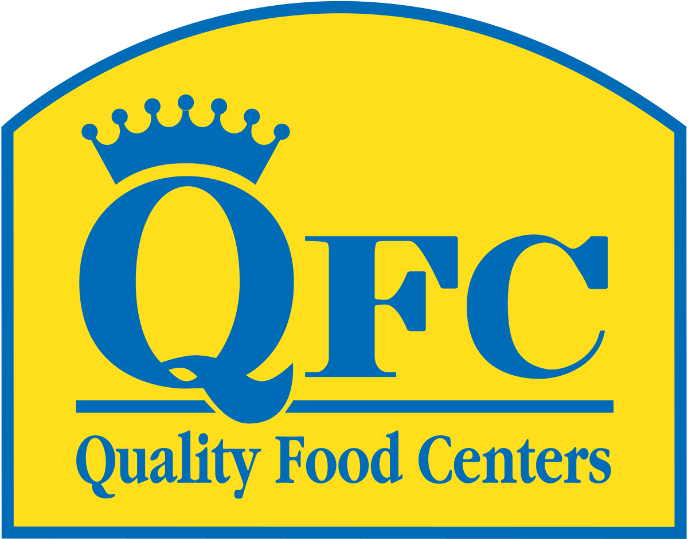

Working as a Hardware Associate, I provide customer service to customers ranging from contractors who face
tight deadlines and need their tools and equipment quickly, to DIY home improvement people who have less industrial
needs. Besides organizing and stocking the aisles during downtime, I also complete the tedious process of re-keying
locks and cutting keys which requires a good amount of dexterity. Overall, I help ensure that customers can get in
and out of the highest grossing Home Depot of the region promptly, finding their items without difficulty.

As a produce clerk, I maintain the produce stock for large Kroger grocery store. I ensure all products
are fresh and the displays are presented cleanly and neatly. I also work shifts as a front end
cashier. I handle customer questions and complete a variety of tasks along with checking out customers.
As a grade 8 youth soccer refereee, I worked as the center referee for competitive rec soccer games for ages U8-U12
. I ensured all players demonstrated sportmanlike conduct and played the game within the rules. I coached players on basic
concepts when they struggled to follow rules and encouraged players who were successful and correct in their play. When
over-enthusiastic coaches, parents, or players got out of hand, I used techniques learned in the training modules to
handle situations calmly and appropriately. Most of all, I made sure games were fun!